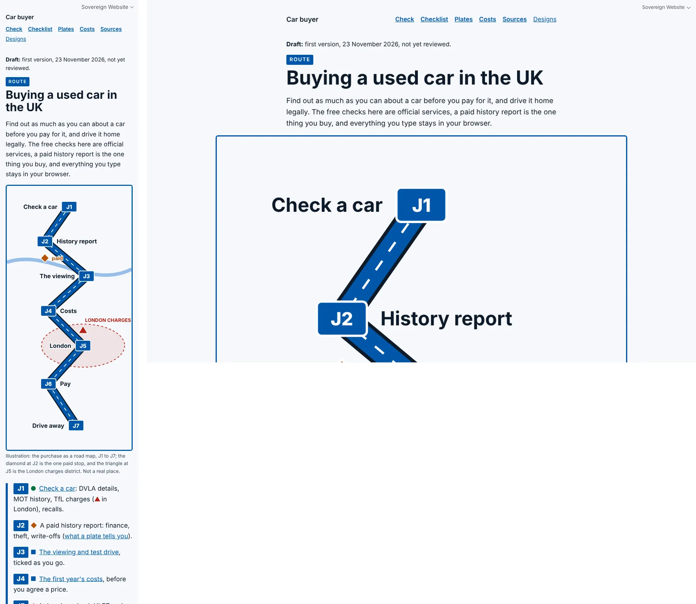

Synthetic users: Car Buyer, round 11 (the map on a phone)
Site: https://car-buyer.tool.sovereignweb.site/ at 0f95793 (v0.1.15). Run: 23 November 2026, about 23:45 UTC, by design.b.rounds. Use it: 5 of 5. Show a friend: 5 of 5 (the third run). Look 3.6 (4, 4, 4, 3, 3), as in round 10. Home page: five ideas, 5 of 5. Checklist: five ideas, 3 of 5. Nobody said "wow". The review.
New since round 10: - Road atlas has an upright map on phones; - its checklist sections are named by junctions; - the seller-finance item is split, so only finance is paid; - MOT shows "Not yet" on phones.
These are simulations, and never replace the measured checks or a real person.
| Persona | Use? | Friend? | Look | Best | On the map |
|---|---|---|---|---|---|
| First-time buyer | yes | yes | 4 | Windscreen card | phone: "like a game level"; desktop: "Why is it giant and then there again underneath? Looks broken." |
| Parent | yes | yes | 4 | Logbook ("'have you done 2.3?'") | desktop: "Two maps, one enormous." |
| Londoner | yes | yes | 4 | Road atlas | "why is the TfL item under J1 to J2 when London is J5?" |
| Low-vision reader | yes | yes | 3 | Windscreen card | phone: "The labels are big enough now and it reads top to bottom." |
| Design critic | yes | yes | 3 | Windscreen card ("the only home page that uses your own data") | desktop: "A shipping bug. The phone version isn't hidden at desktop width." |
Best-design votes: Windscreen card 3, Logbook 1, Road atlas 1. The map: helps and looks good on a phone (5 of 5); looks broken on desktop (4 of 5).
